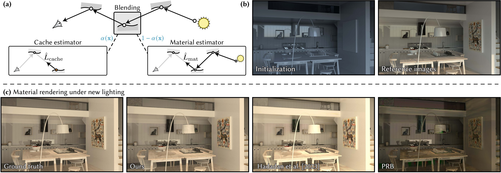

Radiance Caching for Differentiable Path Tracing
1EPFL, 2Google
ACM Transactions on Graphics (Proceedings of SIGGRAPH), 2026

(a) At each surface interaction, we estimate outgoing radiance by blending a cache estimator (querying a learned radiance cache) and a material estimator (continuing path tracing through BSDFs). A spatial blending field learns where to trust each estimator. Our training discourages degenerate decompositions where either estimator is only meaningful inside the blend, enabling reuse of the recovered materials for editing and relighting. (b) Starting from a rough material initialization (visualized under unknown lighting), we jointly optimize cache, materials, and the field. (c) We discard cache and the field and render material-only under an unseen relighting condition, comparing against Hadadan's method and PRB.
Abstract
Differentiable path tracing offers a principled route to recovering physical material and lighting parameters, but the combination of high variance and poor numerical conditioning often makes it too brittle to use in practice. This is especially the case when lighting is altogether unknown, or when the scene contains complex light transport effects. Prior work recently showed that the variance reduction provided by a radiance cache can alleviate these challenges. We revisit the combination of inverse rendering and radiance caching with a twist, by introducing a spatial blending field that locally interpolates between the cache and standard unbiased estimators. Recursive application of this idea yields a rich design space of evaluation strategies and inter-estimator consistency losses; we map this space and identify effective components. A surprising property of the resulting algorithm is that it can accurately recover material parameters even when the lighting is not uniquely identifiable from the observations. Our experiments demonstrate significant improvements in speed and robustness over prior work, making a strong case for including radiance caching as a standard component of future physically based inverse rendering systems.
Video
Downloads & resources
- Publication:
- Code:
Text Reference 
Ziyi Zhang, Delio Vicini, Sebastian Winberg, Stephan Garbin, Wenzel Jakob. Radiance Caching for Differentiable Path Tracing. ACM Transactions on Graphics (Proceedings of SIGGRAPH), 45(4), July 2026.
BibTex Reference
@article{Zhang2026Cache,
author = {Ziyi Zhang and Delio Vicini and Sebastian Winberg and Stephan Garbin and Wenzel Jakob},
title = {Radiance Caching for Differentiable Path Tracing},
journal = {ACM Transactions on Graphics (Proceedings of SIGGRAPH)},
volume = {45},
number = {4},
pages = {17},
year = {2026},
month = jul,
doi = {10.1145/3811398},
}